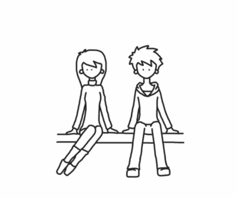

On Embracing Failure - And Seeking for it.
Today I feel well. I got rejected for a PhD application, the only one I made in my life, and most likely the last one. But no this post is not about the usual stuff: "yeah it is ok to fail, I feel well despite it". Of course I do, by now I understood what matters to me in life. Nothing that is work related will ever gonna take the smile out of me, nor put it for what it counts.
Despite it, I want to share and put down to words some thoughts. After all it is an event that could have changed my life and it is a good exercise to write a few words about it.
On the Notion of Failure and about being Entrepreneurs in Life
Well, I am gonna tell you - anonymous reader - why I feel well. I like mess. I like chaos. I like problems. I think that people that know me well, know it well.
I did not do a PhD application for having a title on my CV, I did it to seek growth. This is why I did not do an application in a field I studied, to study it even more and get my certificate. I rather did it in a new field I highly believe in and I wanted to explore, in a top-notch University but more important in a research group that delivers.
Seek growth, this is what I did throughout my life, often not taking the most rational choice but challenging myself. Not maximizing the chance of success, but searching the right balance of chance of success * expected personal growth, or something like that. I have all the life to go back to the norm, but at least when I am young: let me risk.
At the beginning I was more shy and conservative. When I was young I was quite wild and did not care more than 0 about my mental education. So when I started University years ago I approached it in a conservative way. I did what it was required for me to do and nothing more. With the time I realized I was good at it and that it was too easy to do my job at it and full stop.
So I started to take more risks, and damn it, I like it. I think that my personal growth is convex and that is what counts at the end of the day. I also think that to get that level of growth risks are unavoidable.
So this is my message, take risks and be entrepreneur in approaching life, you will have a great deal of fun. And when life will start to kick you too hard, or when you will start to build up a family and guarantee a future to your children, well you will then have the time to become more risk adverse and reposition, knowing how the world looks like on the dark side of the moon.
On Failure-Fuel and on Failure Signal
I must say that in my way of approaching life, I am not sure that the above counts as failure. After all I managed to arrive and get to the final phase of the PhD position colloquium in a field that had little to do with my education and that was by itself very competitive.
Much worse would have been to fail the application in your field of knowledge after so many years of University education. Still there is a signal in it. You managed to arrive to the final phase just because you had a particular background, so obviously there is an attraction to risk taking behavior and particular backgrounds, even by well respected Professors that should be, by education, very methodic.
Still you failed at the final bit. This means that at the end the world is pragmatic, it obviously prefers the conventional and a profile that delivers more historic-based guarantees. This especially when resources are limited. Take it as a lesson, as the life approach you are taking is interesting but needs to take that into account on the long run.
In any case once you processed the failure signal and took your lesson from it, it is important to synthesize the failure as fuel. After all, failure creates this dimension of problems and mess that I like and it is your moment to chase growth.
Or to put it in different terms, like a young italian band sings, life is like a tetris game, the successes vanish while the errors stay there to give it spice.
Why not to do a second or third application if seeking growth is the goal
Exactly because growth is the goal.
I was not sure in the first place that a PhD would make sense. I was lucky to talk with a very human Prof. and I think that he saw it in me and he sent me some signals in that direction, i.e. a PhD is not always the best way to seek growth and that also on the work side you can make great contributions.
Let's leave it for now and let's take it as fuel for the next coming challenges. A piece of tetris out of place that has to vanish through time.
True Date: 28/12/2020